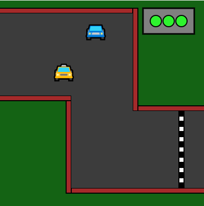

Meus projetos

Projeto Mona lisa
Este projeto é um desenho interativo do personagem Luffy do anime One Piece e a parte "interativa" do projeto aparece em duas partes: ao mover o mouse pela tela o olho do desenho segue o mouse e ao clicar o mouse ele muda para sua forma trasnformada.
Vá para o projeto
Quente e frio dinâmico
É um jogo onde numa tela um ponto invisivel é criado e o jogador tem que procura-lo com o mouse que possui um circulo que fica menor de acordo com a distancia entre o mouse e o ponto.
Vá para o projeto

Jogo de corrida
Este projeto é um jogo de corrida que pode ser jogado em 4 pessoas até feito pelo site "P5.js".
Vá para o projeto